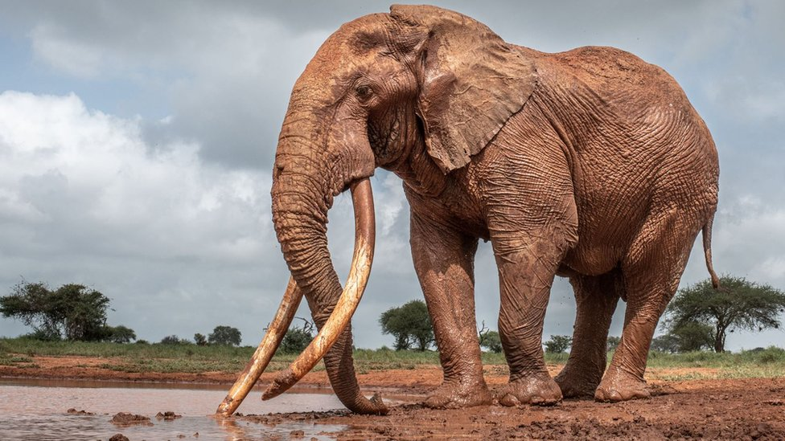

Лев
Витратливий цар саван, відомий своєю гривою та відважними звичками. Живе в соціальних групах та полює на великих копитних.
Вага: 190 кг | Середня тривалість життя: 15 роківВідкрийте чудеса дикої природи
Наша енциклопедія містить інформацію про найцікавіших тварин планети
Витратливий цар саван, відомий своєю гривою та відважними звичками. Живе в соціальних групах та полює на великих копитних.
Вага: 190 кг | Середня тривалість життя: 15 років
Найбільші наземні тварини з розвинутим інтелектом. Живуть в сім'ях та використовують хобот для многочисленних завдань.
Вага: 6000 кг | Середня тривалість життя: 60-70 років
Найвищі тварини на Землі з довгою шиєю та характерним візерунком. Живуть в африканських саванах та харчуються листям дерев.
Вага: 1000 кг | Середня тривалість життя: 25-30 років
Могутні хижі птахи з гострим зором та сильними кігтями. Соколи в небі, здатні розвивати велику швидкість під час полювання.
Вага: 6 кг | Розмах крил: 2 м
Екзотичні рожеві птахи, відомі своєю грацією та соціальною природою. Живуть великими колоніями біля озер та лагун.
Вага: 2-4 кг | Висота: 100-150 см
Нелітаючі птахи, адаптовані для життя в льодовитих водах. Чудові плавці, що полюють на рибу та криль.
Вага: 4-40 кг | Середня тривалість життя: 20 років
Довгі безногі плазуни, що мешкають майже в усіх кліматичних зонах. Більшість видів є невинними, але деякі містять отруту.
Довжина: 0.2-7 м | Тип їжі: м'ясоїдні
Велики озброєні плазуни, що живуть у водах. Вважаються одними з найвищих хижаків, практично незмінні 200 мільйонів років.
Вага: 400-1000 кг | Довжина: 2-7 м
Древні плазуни з твердою панцирною оболонкою. Деякі види живуть більше 100 років і мешкають як на суші, так і у воді.
Вага: 0.1-2000 кг | Середня тривалість життя: 50-150 роківМаєте питання або цікаву інформацію про тварин?